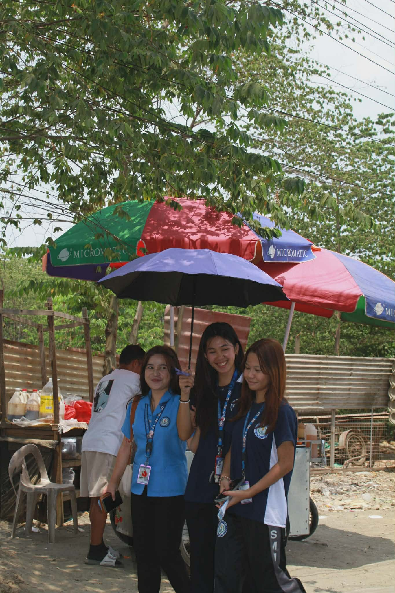
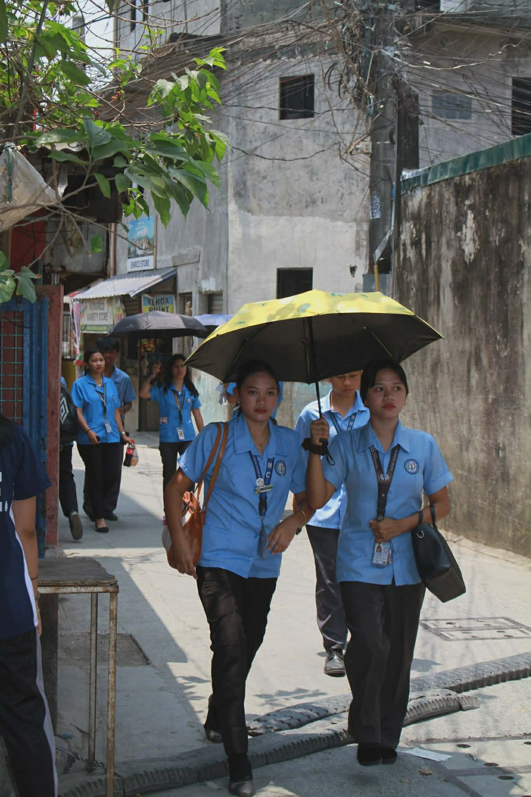

Street Stories of Friendship

A simple day, A special Friendship

Simple Life, Happy Moments Together
A simple day, A special Friendship
Under the hot sun, a group of friends gathered under a colorful umbrella to stay cool. They were talking and laughing together, sharing stories about their day at school. They talked about their lessons and funny moments in class. Even though it was simple, you could feel their happiness and strong friendship. ??Suddenly, one of their classmates jokingly hugged a friend, making everyone laugh even more. In that moment, they forgot their tiredness and stress. That simple time under the umbrella became a happy memory for all of them. Because of their friendship, an ordinary day became special and unforgettable.
1. Why did you choose this subject?
I chose this subject because it shows real and natural interaction between people. The students are not posing too much, so their actions feel authentic. It represents daily life that many can relate to.
2. What elements make your photo effective?
The natural lighting from the sun makes the photo bright and lively. The composition is balanced because the group is centered and easy to focus on. The emotions make the photo engaging.
3. What challenges did you encounter?
One challenge is controlling the lighting since it is very bright outside. Another is capturing the right moment because people are moving.
4. How can you improve next time?
Next time, I can adjust my angle and framing. I can also wait for better timing and control exposure more carefully.
5. How can you improve your shot next time?
Next time, I can adjust my angle to reduce background distractions. I can also try different framing techniques like the rule of thirds. Waiting for a more perfect moment or expression can improve the shot. Lastly, I can control exposure better to avoid overly bright areas.